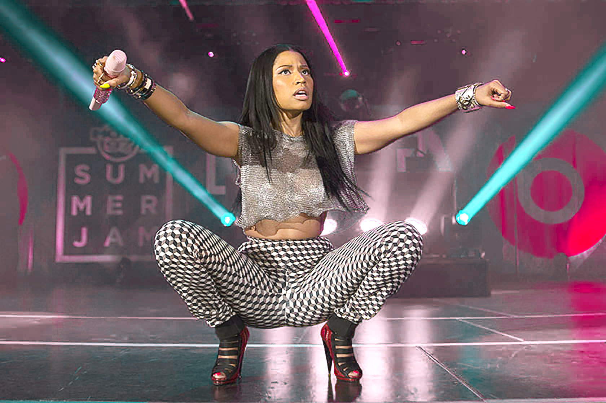
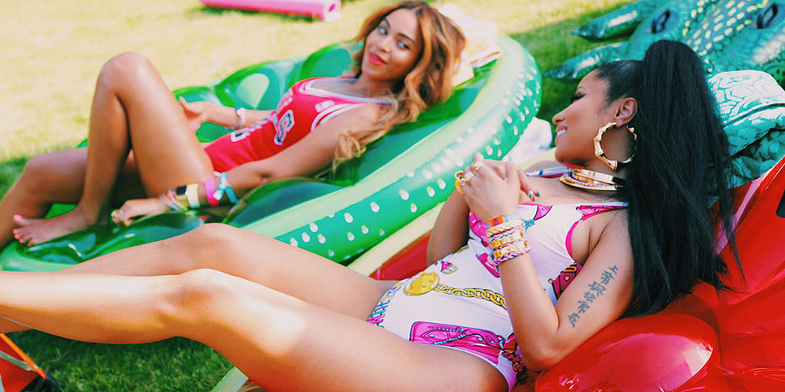

FEBRUARY 12, 2015 3:45 PM
by Alex Frank
Nicki Minaj's third album, The Pinkprint, came out in December at a moment of personal and professional transition for the rapper. While writing the record, Minaj was going through a painful and occasionally public breakup with her boyfriend of eleven years, Safaree Samuels. Gone were the neon wigs and peppy pop songs. In the first track alone, she examines a painful memory about an abortion she had as a teenager, the 2011 killing of her cousin Nicholas, and her use of painkillers. After years of getting to know the colorful, cartoonish avatar she had created for herself, it seemed we were getting to know a new Minaj—possibly even the real one.
Minaj is the most globally visible female rapper of all time. This makes her something of a canary in the music coal mine, testing what can and cannot be done within the tricky, competitive landscape of pop. She greets the male gaze and then subverts it; makes music with feminist themes while maintaining a competitive edge; and flows better and harder than any other rapper out there, but can just as readily sing sweet pop songs that appeal to five-year-olds. Watching her deep, diverse talent is thrilling—oh, the places she'll go! Minaj spoke with Vogue.com from Los Angeles about The Pinkprint, feminism, and rapping at 50.
Pinkprint has been out for almost two months now. Has the response surprised you in any way?
I've gotten such great feedback that it's only really inspired me to do more music. I never connected with people on this level. I think Pinkprint opened me up to so many more people who probably didn't understand me before—it's just such a real album that anyone who has ever gone through any kind of relationship issue can understand. And I think that the overall production is so much greater. Everything shows so much growth.
What stands out when you listen to it now?
When I listen to a song like "Grand Piano," I'm proud of myself that I sang that song. I'm a rapper at the end of the day, but I sang a song like "Grand Piano" and people can feel every word. And it doesn't sound like a rapper singing a song. It just sounds like a beautiful song. I'm always proud when I step out of my comfort zone and do songs like that.
"Sometimes I cringe when I hear the things that I spoke about, but I do think that it inspired people. So it has to be spoken about."
For so long, people have thought of you as a superhero or a cartoon. Is it harder to be just a real human?
Definitely tougher to be vulnerable. As a woman in the industry, you try so hard to remain strong and to not let your guard down. And once you let the walls down and let people see that you were a regular person who has feelings, sometimes people take advantage of that. I think that applies for everyone. It's always a little bit nerve-racking to just completely let your guard down because you just don't know if people are going to appreciate it. And then if they don't appreciate it, you can feel like you did it in vain.
It's therapeutic for me when I listen to the album. Sometimes I cringe when I hear the things that I spoke about, but I do think that it inspired people. So it has to be spoken about.
You're referring to "All Things Go," the song in which you address your breakup, an abortion you had as a young woman, and your use of painkillers.
A lot of people came up to me after this album came out and said, "I thought that I was the only person who was going through this."
I love artists who take risks—I think they inspire everybody else about horrible situations that no one wants to discuss. While I was doing the album I listened to a lot of Bob Marley songs and I love his approach on relationships. I love that he kind of just was able to speak about painful situations but in a very relatable way. I'm very inspired by Lauryn [Hill]'s honesty on Miseducation of Lauryn Hill. But my album doesn't sound like anyone else's album. Even the production, it just sounds like my own thing.
I'm my worst critic and I always want to give people something better than I gave them before.
What do you think your place in the history of rap is?
I don't know. I think that's for other people to say. I want to be seen as a hard-working businesswoman who really takes pride in writing and rapping in a way that still shows that I'm hungry. I'm still hip-hop—and that's never going to change. But I do know that I've worked really, really hard to perfect my craft and give people something that I can be proud of. I'm my worst critic and I always want to give people something better than I gave them before.
I've always felt that people's expectations of you are higher than they are for other pop stars like Katy Perry—they want you to be hard, they want you to be soft, they want you to be pop, they want you to be rap.
It's frustrating—I won't lie about that. I do feel like, with me, everybody wants something different. It's my fault for giving them a lot of different things to choose from so early in my career, but I always felt like a multifaceted human being, and I never wanted to stop on one thing.
When I take time to focus on the urban records, there are people who want the pop records. But my urban core is ecstatic right now—urban radio is playing every song and we're having so much success over there. I'm glad that I did it and perfected it. In terms of the pop part, I think we'll be releasing "The Night Is Still Young" as a single for that other type of fan who wants to hear that from me. I don't turn my back on anything, I just wanted to focus on the Pinkprint's urban presence first and foremost.
People tend to focus on your personal life and not ask you straight up about your rapping technique. How do you approach rapping?
I always try to approach it in a way that is artsy. I like to keep people guessing—with my flow and with the speed and with the cadence and with the wordplay. I’m big on that. Sometimes I sit down for hours and change things. I’ll say to people I know, “What do you think about this?” It’s a sport to me. I never want to get too complacent with my writing or my flow. I love that people never know what Nicki they are going to get on a particular song. I like bringing out a different side. I think that’s what rappers should do. I pride myself on always having a magical moment.
Most of Pinkprint, I sat down in my bedroom alone, on my bed, and I would write in between watching, like, Forensic Files. It's always so personal to me. It's always something that I'm thinking in my head: How can I push myself this time? How can I get a reaction with this particular line? How can I say this particular line super fast and still have everyone understand the words I'm saying? It's allowing people to feel like they can do it, too, when they rap along with you. Allowing people to feel like it's fun when they rap along. I'm still having fun in my craft and I'm pretty sure I'm going to get even better on the next album. I'm always growing.
 Nicki Minaj performing at Hot97 Summer Jam 2014
You're also just funny. You're like Joan Rivers—you have jokes!
I do have jokes. [laughs] I know. I've said before, if I say a rap and I laugh, that means it's a winner.
Critics picked up on feminist themes on Pinkprint. What's your relationship with feminism at the moment?
You know, I feel like certain words can box you in. I think of myself as a woman who wants other women to be bosses and to be strong and to be go-getters. I've always said that, since I came in the game, even when I was doing mixtapes. I don't know. There are things that I do that feminists don't like, and there are things that I do that they do like. I don't label myself. I just say the truth about what I feel: I feel like women can do anything that they put their minds to. That's really the truth—I started off with just a dream.
There are sexual things that I do that aren't for a man. I feel empowered sometimes by being sexy and being comfortable enough to be sexy on camera—a lot of woman struggle with that. But there are some days that I don't want anyone to see me. I'm just a regular girl. Some days I'm super strong; some days I'm super insecure. But I don't really identify with any particular label. I just speak my truth and if people like it, they like it, and if they bash it, they bash it.
I think the only woman in the industry who works as hard as you is Beyoncé. Do you ever think, I can't be Nicki Minaj today?
I did get exhausted last year. I promised myself that when I put out Pinkprint, I would take some time to live my life and not care what other people said about me. I find that people feel like they know what I've gone through in the past two years, and they don't. I've seen so much judgment. If people knew what I've really gone through, they'd think I was Mother Teresa. I've taken so much shit, so much betrayal, and I still remain classy about it.
This year, I decided that I'm going to live my life. Because I love making music but I need to live my life, and I need to realize that people are going to talk about me no matter what. They don't know who I am. And it's kind of sad because I've done so much for so many people, but I haven't taken a moment for Onika. But this year, I'm taking a moment before the tour. I'm going out and having fun because none of this is guaranteed. I'm not living my life for social media and people who don't know anything about me anymore—for them to give me a stamp of approval. It doesn't matter to me anymore.
 Nicki Minaj and Beyonce on set of Feeling Myself music video
How is the single life? Are you partying? What's a Friday night like?
I'll just say that I haven't had this much fun in years. Yeah, I am partying, and I am freer, and I am just enjoying myself and my life.
You've been looking cozy with [rapper] Meek Mill on Instagram, and people are saying that you two are dating. Is he a part of the fun you're having?
Sometimes we hang out, and when we hang out, we have fun. [laughs] This is what I want to say about him: People think for some strange reason that we just started becoming friends recently. We've been friends for a very, very long time, and he's been around for a lot of things that I've gone through. And that's all I'll say about that.
You're from Trinidad. Carnival is coming up this weekend, and you've got a song on the album called "Trini Dem Girls." How has island culture influenced you?
I love island culture. I love being an island girl. I wear that so proudly. I love being able to say, I'm not American, I'm Trini. I think it gives me so much more depth. I'm able to connect with people who aren't just Americans, but so many West Indian people no matter where they come from can identify with me just off the strength that they know we have something in common.
Reggae music has inspired me so much. When I left Trinidad, I was young, so I didn't grow up on calypso per se. But I love all the big Trini acts. Machel Montano, Bunji Garlin, and Fay-Ann—they do such a great job representing my country. But when I came to New York, reggae was a big part of life in New York. That was the time when—and I still think Beenie Man is the king of dancehall—you couldn't go anywhere without hearing Beenie Man a million times. And Buju Banton. These amazing reggae artists influenced me more than I think people realize. It's always there on the album—I always at one point on an album have to represent for my island people.
Do you want to be rapping when you're 50?
No. [laughs] I definitely don't. I want to be traveling the world at that time with my children and enjoying life. There's a level of criticism that comes with being a musician in today's world, especially with social media, that I don't want to be a part of when I'm 50 years old. I love my fans, but I think at one point in my life, I'll be okay with just walking away. Okay, I had a great time, but it's time to live life without other people's approval.
As soon as you step into this business you know that you're subject to be judged, but at a certain point, I just want to be free and relax with my family. I don't get a lot of time with the people who I love the most. And that was one of the things I realized toward the end when I was all alone, writing by myself with no one there, and felt really abandoned. I didn't have anyone there. It was me and my engineer. Or me writing by myself. Or in my bedroom alone with my best friend, Sharika.
I'll get to a point where I feel like I've fulfilled my destiny in terms of writing and albums. And then I'm going to just go and enjoy the world.